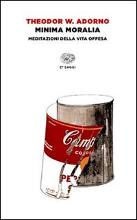

8:19 · 2 OPERE
Il tiranno non discute.
Il filo del discorso
Lettura di un articolo dedicato al rapporto fra dissenso, consenso e potere durante la pandemia. A partire da una domanda ascoltata alla radio sui lavoratori non vaccinati, il relatore critica la divisione sociale e descrive la tirannide come decisione arbitraria seguita dalla ricerca di adesione. I richiami ad Adorno, all’etica del discorso e alla fiaba dell’imperatore sostengono la sua difesa del confronto pubblico.
I libri nel discorso

Minima moralia
Copertina: Einaudi, 2015
Titolo e autore annunciati nel passaggio sulla perdita dell’evidenza logica.
Passaggio 5:01 ↗ · Fonti e libro ↗I vestiti nuovi dell’imperatore
Copertina: Rizzoli, 2014 · eBook di riferimento
L’immagine del bambino che denuncia l’imperatore senza vestiti richiama la fiaba, senza nominarne l’autore.
Passaggio 8:03 ↗ · Fonti e libro ↗